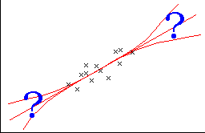

The shape of a relationship is only known around the data
The models that we have used to describe the relationship between a response, Y, and explanatory variable, X, are usually only approximations to the 'real' relationship. For example, a scatterplot may look linear, but we really have no information about the shape of the relationship beyond our data.

As a result, the models that we have described may be used to predict Y from values of X that are within the range of x-values in our data, but we should be very cautious about using a fitted model for predictions outside this range. This is called extrapolation and it can be badly in error.
Avoid using a model to predict Y far beyond the available data.
What model for curvature is best?
We described two different types of nonlinear model for data with curvature — quadratic models and linear models based on transformed variables. There are many data sets for which both types of model fit equally well.
However the different types of model can give very different predictions when used to extrapolate from the observed data. The data cannot help us to decide which is better.
GDP in the USA
For example, consider the time series of GDP (measured in billion dollars, corrected for inflation by being expressed in 2006 dollar terms) in the USA between 1960 and 2013.
We saw earlier that a quadratic model fitted well. In terms of an explanatory variable t that we define to be the year minus 1960 (so that 1960 is year t = 0, 1061 is year t = 1, ...) the least squares curve is
estimate of GDP = 3186.6 + 122.26 t + 2.400 t2
The logarithm of the pressure is also approximately linearly related to boiling point with the equation
estimate of ln (GDP) = 8.143 + 0.0308 t
This equation can be rewritten in the form
estimate of GDP = exp( 8.143 + 0.0308 t )
The two models (quadratic in the original measurements and linear in the transformed measurements) both fit the data reasonably well with residual plots that are similar. The data give no indication of which of the alternative models fits better.
Use the pull-down menu to display the two fitted lines (Quadratic model and Log linear model). Observe that they both fit the data reasonably well.
Select the option Both models, then use the slider to extend the two axes. Before about 1940 and after about 2020, the two models give very different predictions of GDP.
Indeed, the quadratic model (which is green) predicts that GDP would have been higher in 1920 than in 1940, which is clearly unreasonalbe! For these data, the log linear model conforms better to how we might expect GDP to have changed in the past.
However we really have little idea about which curve is better in the future— indeed, neither may adequately predict GDP. The point here is that...
Predictions from any model will be very unreliable if the predictions are made away from values of the explanatory variables where we have data